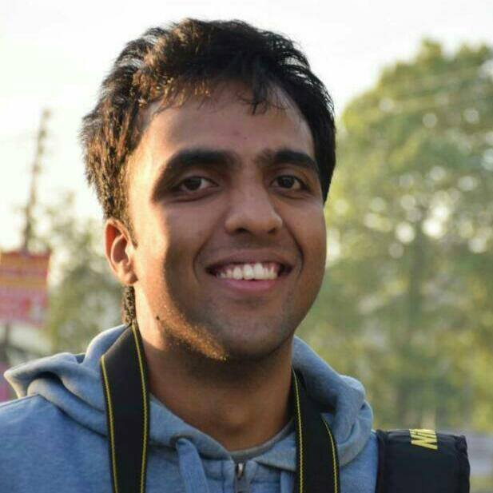

|  | PhD candidate, Contact: snb62(at)cornell(dot)edu. |
I am a PhD candidate in the School of Electrical and Computer Engineering at Cornell University, jointly advised by Aaron Wagner and Jayadev Acharya. Before coming to Cornell, I graduated with a BTech and MTech in Electrical Engineering from Indian Institute of Technology, Madras and was fortunate to be advised by Andrew Thangaraj.
My research interests broadly include the areas of information theory, machine learning and recently, causal inference. A few specific research interests include
Modern Data Compression Theory: I am interested in understanding how stochastically-trained, artificial-neural-network-based (ANN-based) compressors perform well on multimedia sources. Since most multimedia sources are high-dimensional but thought to lie on a low-dimensional manifold, a good chunk of my Ph.D. work considers such manifold sources whose optimal performance is tractable and obtained in terms of a rate-distortion tradeoff. This then helps compare the performance of ANN-based compressors with the optimal rate-distortion tradeoff.
Causal Inference and Machine Learning: Recently I have been exploring the intersection of causal inference and machine learning. Specifically I am interested in making machine learning (ML) algorithms more “causal-aware” as a means to make them robust and interpretable. I am also interested in exploring whether such “causal-aware” algorithms have an edge from a sample-complexity viewpoint.
Jayadev Acharya, Sourbh Bhadane, Arnab Bhattacharyya, Saravanan Kandasamy, Ziteng Sun,
“Sample Complexity of Distinguishing Cause from Effect”. [Talk by Arnab at Simons Causality Program ]
Accepted to Artificial Intelligence and Statistics, AISTATS 2023.
Sourbh Bhadane, Aaron B. Wagner, Johannes Ballé,
“Do Neural Networks Compress Manifolds Optimally?”.
Information Theory Workshop, ITW 2022.
Sourbh Bhadane, Aaron B. Wagner,
“On One-Bit Quantization”.
International Symposium on Information Theory, ISIT 2022.
Sourbh Bhadane, Aaron B. Wagner, Jayadev Acharya,
“Principal Bit Analysis: Autoencoding with Schur-Concave Loss”.
International Conference on Machine Learning, ICML 2021. [ ICML Talk ], [SCW Poster]
Aaron B. Wagner, Elaine L. Hill, Sean E. Ryan, Ziteng Sun, Grace Deng, Sourbh Bhadane, Victor Hernandez Martinez, Peter Wu, Dongmei Li, Ajay Anand, Jayadev Acharya, David S Matteson,
“Social Distancing merely stabilized COVID‐19 in the United States”.
Stat, 2020.
Jayadev Acharya, Sourbh Bhadane, Piotr Indyk, Ziteng Sun,
“Entropy Estimation of Distributions in Constant Space”.
Conference on Neural Information Processing Systems, NeurIPS 2019. [WOLA Talk],[ITA Poster]
Sourbh Bhadane, Andrew Thangaraj,
“Unequal Locality and Recovery for Locally Recoverable Codes with Availability”.
National Conference on Communications, NCC, 2017.
Akshay Gulati, Sourbh Bhadane, Joseph Samuel, Harishankar Ramachandran, R. David Koilpillai,
“IITMSAT : Innovative Packet Protocol and Concept of Operations”.
AIAA Conference on Small Satellites, SmallSat, 2016.
Jagdish M. Mevada, Joseph Samuel, Sourbh Bhadane, Akshay Gulati, R. David Koilpillai,
“Design and Implementation of a Robust Downlink Communication System for Nanosatellites”.
IEEE International Conference on Small Satellites, Iconspace, 2015.
NeurIPS 2022,2021; ICML 2022; ICLR 2023,2022; AISTATS 2023; ISIT 2022,2021,2020,2019; ITW 2022,2021; DCC 2023,2021,2019.
Instructor
MATH 112: Contemporary Mathematics (Spring 2022; Auburn Correctional Facility, Fall 2022; Five Points Correctional Facility):
I was an independent instructor of a mathematics course for incarcerated students enrolled in community college via the Cornell Prison Education Program.
I designed course content including lectures, homework and exams.
Teaching Assistant
ECE 2720: Data Science for Engineers (Spring 2022, Fall 2019):
I was an early-stage TA for the second iteration of this course in Fall 2019 and one of the Head TAs for a subsequent offering in Spring 2022.
I produced extensive lecture notes that were used as a primary reference for the course, led dicussion sections and graded exams.
Grader
ECE 4200: Fundamentals of Machine Learning (Fall 2021, Fall 2020, Spring 2020, Spring 2019, Spring 2018):
I had great fun creating four in-class Machine Learning competitions! Check them out: Spoken Digit-Pair Recognition, Font Recognition, Modulation Prediction, Guilty or Not Guilty?.
ECE 5620: Fundamentals of Data Compression (Spring 2021)